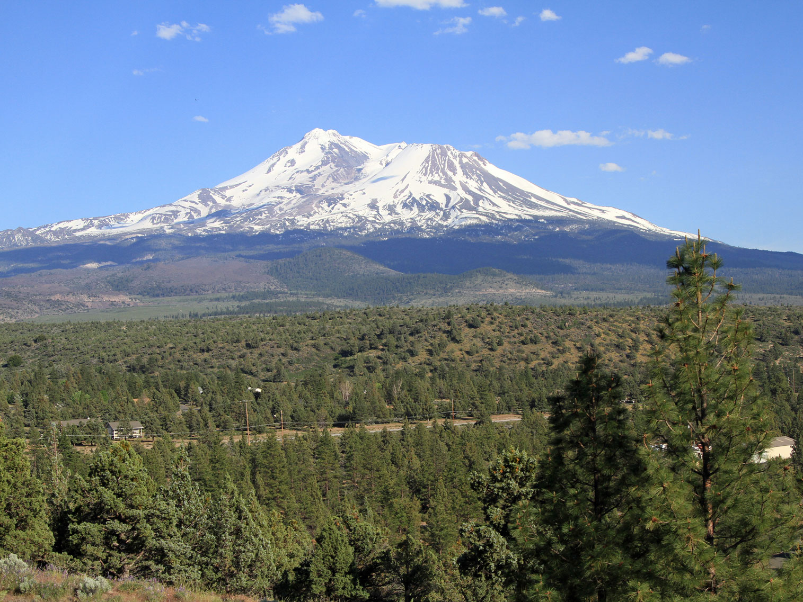

Northern California Travel Guide
Northern, less populated area of California featuring the northern coastal region including the Lost Coast and Redwood National and State Parks, and mountainous region that features Lassen Volcanic National Parks and Mount Shasta
Places to See in Northern California
Lassen Volcanic National Park
Park containing largest plug dome volcano in the world and the southernmost volcano in the Cascade Range and is one of the few areas in the world where all four types of volcano can be found with area surrounding is still active with boiling mud pots, fumaroles, and hot springs

zoxcleb, CC BY-SA 2.0, via Wikimedia Commons; Image Size Adjusted
.jpg){kind=link}
Lava Beds National Monument
Largest total area covered by a volcano in the Cascade Range and features numerous lava tubes, with 27 having marked entrances and developed trails for public access and exploration

Frank Schulenburg, CC BY-SA 4.0, via Wikimedia Commons; Image Size Adjusted

Lost Coast
Mostly natural and undeveloped area of the California North Coast in Humboldt and Mendocino Counties, known for hiking, its black sand beaches, and rugged and remote location
McArthur-Burney Falls
Second oldest state park in the California State Parks system, mainly known for the waterfall, Burney Falls, at the entrance of the park, and offers camping, fishing, watersports, hiking and horseback riding facilities

Jef Poskanzer, CC BY 2.0, via Wikimedia Commons; Image Size Adjusted

Mendocino Area
Community despite its small size, is a scenic location on a headland surrounded by the Pacific Ocean, making it extremely popular as an artist colony and with vacationers

Rob Hodgkins, CC BY-SA 2.0, via Wikimedia Commons; Image Size Adjusted
.jpg){kind=link}
Mount Shasta
Potentially active volcano at an elevation of 14,179 feet, is the second-highest peak in the Cascades and the fifth-highest in the state

rachel_thecat, CC BY-SA 2.0, via Wikimedia Commons; Image Size Adjusted

Redwood National and State Parks
Complex of several state and national parks located along the coast of northern California, featuring old-growth temperate rainforests and protect 45 percent of all remaining coast redwood, which are the tallest, among the oldest, and one of the most massive tree species on Earth
Overview
Northern California is the state’s less crowded northern reach, from the foggy coast of Mendocino and Humboldt counties to the volcanic peaks of the Cascade Range near the Oregon border. Visitors come for giant redwood forests, a rugged coastline, remote hiking, waterfalls, and two of the state’s most striking volcanoes, Lassen Peak and Mount Shasta.
The north coast has the world’s tallest trees at Redwood National and State Parks and the wild, roadless shoreline of the Lost Coast. Inland, the mountainous region offers hydrothermal areas at Lassen Volcanic National Park, skiing and climbing on Mount Shasta, and lakes, lava tubes, and trout streams in a landscape with far fewer crowds than the rest of California.
Geography
The coast is a line of steep bluffs, sea stacks, and redwood-covered mountains of the Coast Ranges, with the King Range rising abruptly from the Pacific on the Lost Coast. Inland, the Klamath and Trinity mountains lead to the southern end of the Cascade Range. Mount Shasta rises to 14,179 feet, and Lassen Peak, among the largest lava-dome volcanoes in the world, reaches 10,457 feet. Redwoods grow in the cool, foggy coastal belt, while the interior has hotter, drier summers.
History
Native peoples including the Yurok, Karuk, Hupa, Wiyot, Wintu, Shasta, and Modoc have lived in the region for thousands of years. Gold seekers poured into the Klamath and Trinity rivers in the 1850s, and logging soon followed, ultimately cutting most of the original redwood forests. Conservation efforts led to Lassen Volcanic National Park, created in 1916 after Lassen Peak erupted in 1914–1917, and to Redwood National Park in 1968. The Modoc War of 1872–73 was fought in the lava beds of the northeast.
Cities and Towns
Eureka and Arcata are the largest north coast communities, with Victorian architecture and access to the redwoods, and Ferndale is a well-preserved Victorian village. Crescent City sits near Redwood National and State Parks, while Mendocino and Fort Bragg are popular coastal getaways. Inland, Redding is the gateway to Lassen and Shasta Lake, and the city of Mount Shasta is the base for the mountain.
National Protected Areas
Redwood National and State Parks protect nearly half of the world’s remaining old-growth coast redwoods and are a UNESCO World Heritage Site. Lassen Volcanic National Park has bubbling mud pots, steaming fumaroles, and Lassen Peak. Lava Beds National Monument has more than 800 caves, and Whiskeytown National Recreation Area has a lake and waterfalls near Redding. The King Range National Conservation Area protects the Lost Coast, and the Tule Lake Unit of World War II Valor in the Pacific National Monument preserves a Japanese American incarceration site.
State Parks and Historic Sites
Humboldt Redwoods State Park protects the Avenue of the Giants, while Prairie Creek, Del Norte Coast, and Jedediah Smith redwoods state parks are part of the Redwood National and State Parks system. Sinkyone Wilderness State Park offers access to the southern Lost Coast, and Patrick’s Point State Park has coastal headlands and tide pools. McArthur-Burney Falls Memorial State Park, Castle Crags State Park, and Fort Humboldt and Weaverville Joss House state historic parks preserve scenery and gold-rush history.
Seasons and Best Time to Visit
Summer is the most popular time, with the warmest weather, open mountain roads, and the best conditions for hiking and camping, though coastal fog is common. The Lassen park road is typically closed by snow from late fall until early summer. Spring brings rhododendron blooms in the redwoods and strong waterfalls, while fall offers quieter trails and clear weather. Winter is wet on the coast and snowy in the mountains, with skiing on Mount Shasta, storm watching along the coast, and elk and whale viewing.
This article uses material from the Wikipedia article "Northern California", which is released under the Creative Commons Attribution-Share-Alike License 3.0. Additional information is from the National Park Service pages for Redwood National and State Parks, Lassen Volcanic National Park, and Lava Beds National Monument, the Bureau of Land Management page for the King Range National Conservation Area, and California State Parks.